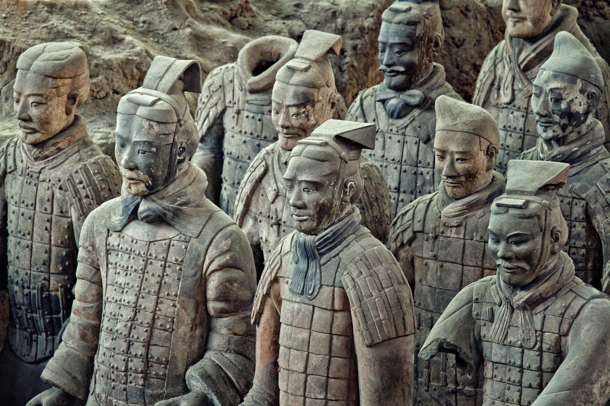
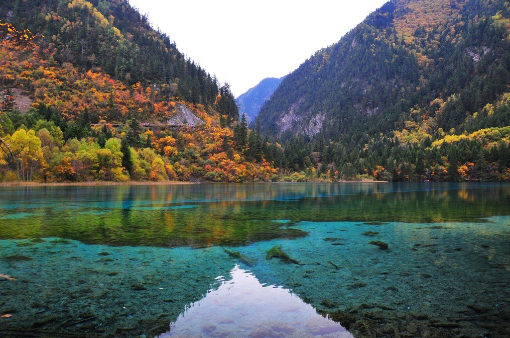
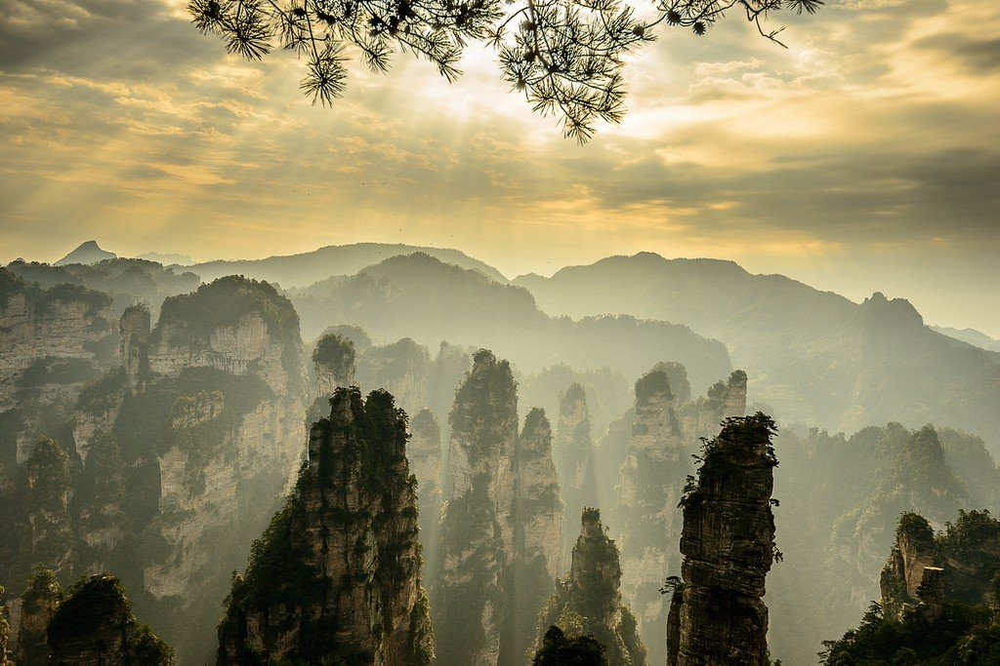
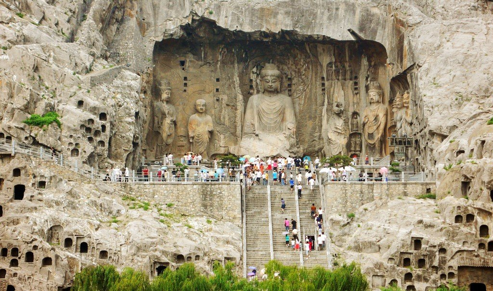

Терракотовая армия Цинь Шихуанди (Terracotta Army)

Терракотовая армия – настоящее сокровище Китая. Практически каждый путешественник, посещающий эту страну, стремится своими глазами увидеть данную достопримечательность. В общем-то, терракотовая армия представляет собой захоронение керамических статуй воинов и лошадей. Всего было найдено 8099 статуй. Сначала археологи предполагали, что воинов в этом захоронении не более 6 тысяч, но потом были обнаружены новые находки.
Долина Цзючжайгоу (Jiuzhaigou Valley)

Долина Цзючжайгоу — необычайно красивое место на восточной окраине Тибетского нагорья. Природа сотворила подлинные чудеса из воды и известняка, водорослей и бактерий, украсила свое создание мхами, лишайниками и многими сотнями растений в пленительном изобилии и великолепии. Как правило, под долиной Цзючжайгоу подразумевают сразу два заповедника – сам Цзючжайгоу и заповедник Хуалун. В свою очередь Цзючжайгоу состоит из еще трех более мелких долин.
Национальный парк Чжанцзяцзе (Zhangjiajie)

Национальный парк Чжанцзяцзе – природный заповедник в юго-восточной китайской провинции Хунань, расположенный в 32 км от одноименного города. Его создавали прежде всего для защиты уникальных видов растений и животных и фантастических скалистых пейзажей, но за 33 года своего существования заповедник поднялся на вторую строчку самых посещаемых охранных зон страны, сразу за долиной водопадов Цзючжайгоу в Сычуани.
Гроты Лунмэнь (Longmen Grottoes)

Гроты Лунмэнь — третий по величине комплекс храмовых пещер Китая (после ансамблей в Дуньхуане и Датуне) датируемый V веком. Находится у «драконьих ворот» (Лунмэнь) на берегу реки Ихэ, в 12 км к югу от Лояна.
Озеро Сиху (West Lake)
Озеро Сиху — главная достопримечательность города Ханчжоу. Песчаная отмель превратила бухту в устье реки Цяньтанцзян в пресноводное озеро 12 тыс. лет назад, и оно прославилось по всей стране. Окаймленные пастбищными лугами берега, набережные, чайные, пагоды, суда и суденышки, острова, цветки лотоса - и все это обрамлено пологими холмами. Озеро Сиху средней глубиной 2,3 м и площадью 6,5 кв. км предлагает гостям бесчисленные пейзажные красоты и много способов насладиться ими.